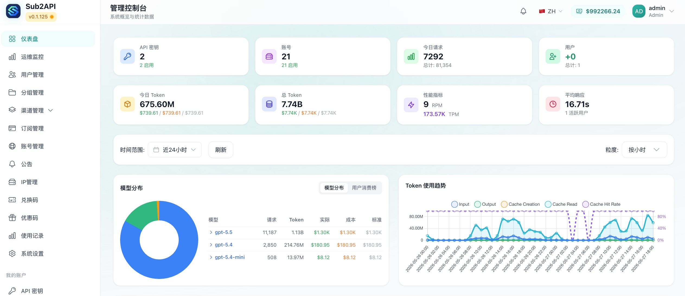
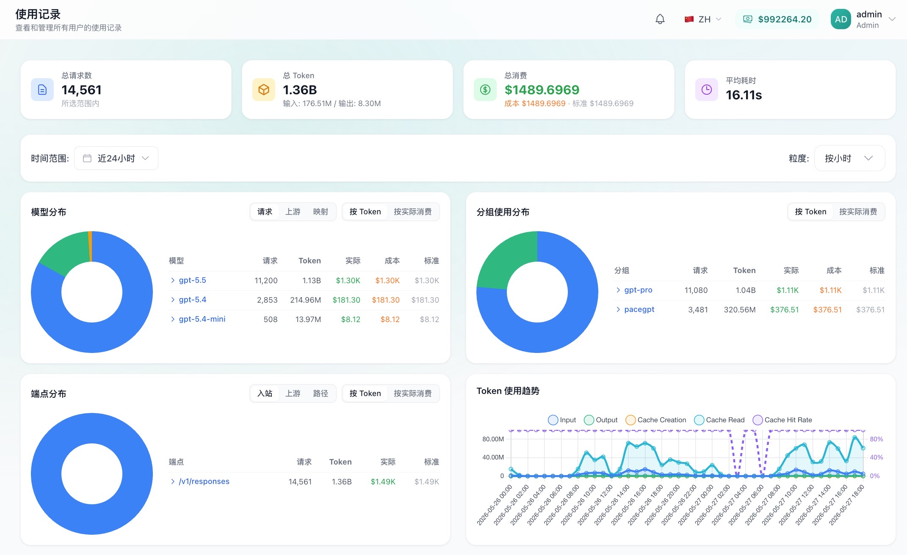
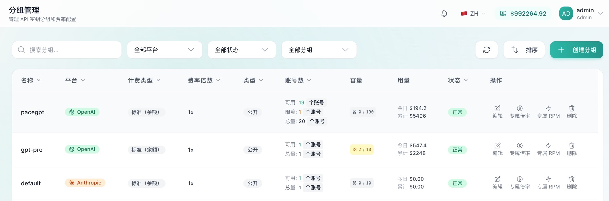
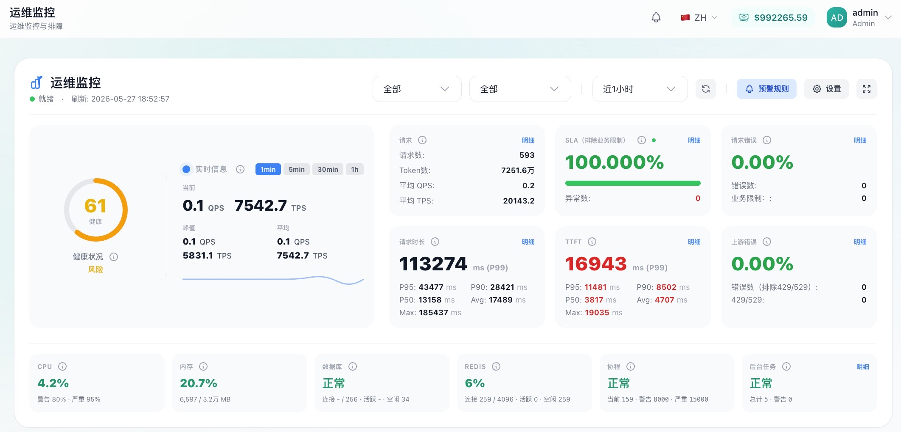

已上线内部平台
GPT 账号管理平台
GPT 账号管理平台是软件部基于 Sub2API 搭建的内部 GPT 能力接入与账号治理平台，用于集中管理 GPT 订阅账号、API Key、额度分配、用量统计和访问控制。公司内部同事可通过内网地址访问平台，按需查看账号资源、申请接入能力或跟踪使用情况。
将 GPT 订阅账号统一纳入平台管理，对外提供标准化 API 接入方式，减少账号分散使用和重复配置。
按用户、团队或业务场景分配 API Key，明确可用范围、额度规则和使用责任。
沉淀请求量、额度消耗和使用记录，支撑后续资源分配、异常排查和成本评估。
适用对象
平台面向公司内部使用，不要求普通同事自行部署。不同角色可以根据关注点查看账号、密钥、额度和使用情况。
| 使用对象 | 可以查看什么 | 使用价值 |
|---|---|---|
| 软件部管理员 | 账号池、API Key、额度规则、运行状态 | 统一维护 GPT 接入资源 |
| AI 应用负责人 | 密钥用量、额度消耗、调用趋势 | 评估应用资源需求 |
| 开发同事 | 接入地址、API Key、访问限制 | 快速接入 GPT 能力 |
| 管理/运营同事 | 账号分布、使用记录、资源消耗 | 了解 GPT 资源使用情况 |
功能展示
集中维护 GPT 订阅账号、可用状态和归属信息，减少账号混用和人工登记成本。
为不同用户或业务场景生成 API Key，并配置可用模型、访问范围和密钥状态。
查看请求量、Token 消耗、额度余额和使用明细，辅助判断资源是否需要调整。
结合账号状态、并发限制和访问频率进行调度，降低单个账号过载或异常使用风险。
平台截图
主要界面预览




访问与使用
公司内网访问：GPT 账号管理平台。该地址面向公司内部网络环境使用。
在公司内网环境打开平台地址，进入 GPT 账号管理平台。
先查看账号池状态、API Key 分配情况和当前额度使用情况。
根据应用、团队或测试场景申请 API Key，明确使用范围和额度需求。
上线后持续查看用量、异常请求和额度变化，必要时联系软件部 AI 对接人调整。
常见问题
| 问题 | 说明 |
|---|---|
| 无法访问平台 | 请确认是否处于公司内网环境，访问地址是否正确。 |
| 需要申请 API Key | 请说明使用场景、预计调用量和负责人，联系软件部 AI 对接人确认。 |
| 额度或用量异常 | 先确认统计周期、密钥归属和实际调用来源，再反馈给平台管理员。 |
| 调用 GPT 能力失败 | 请检查 API Key 状态、访问范围和额度情况，必要时提交异常时间与请求信息。 |
建设说明
本平台基于开源项目 Wei-Shaw/sub2api 搭建。Sub2API 是面向订阅额度分发的 AI API 网关平台，支持多账号管理、API Key 分发、用量统计、智能调度、并发控制、速率限制和管理后台。软件部在此基础上结合公司内部 GPT 账号治理场景进行部署和使用。
| 建设内容 | 说明 |
|---|---|
| 账号统一接入 | 将 GPT 订阅账号纳入统一管理，减少分散维护和重复配置。 |
| 密钥与额度治理 | 通过 API Key、额度规则和使用记录，支撑规范化分配。 |
| 使用数据沉淀 | 沉淀调用量、消耗和异常信息，为资源优化提供依据。 |